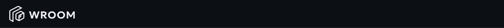
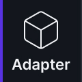
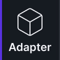
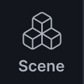
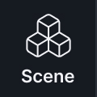
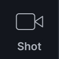
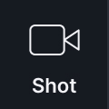
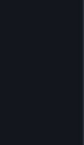

Wroom.ai
Wroom AI Film Production Tool
Translating complex LoRA-based video model training into a clear, filmmaker-native workflow for AI video generation.
Professional filmmakers want creative control, not just AI-generated visuals — but existing tools demand a level of technical expertise that puts that control out of reach.
Key challenges filmmakers face when using generative AI tools today:
No consistency across video generations
General-purpose video models like Veo produce visually impressive results, but offer no reliable way to maintain character and design consistency across generations — even minor changes in prompt or model settings can break visual coherence, forcing filmmakers to restart from scratch.
Filmmakers don't trust big tech with their IP
Filmmakers are reluctant to expose proprietary IP to foundation model providers as training data. In an industry where scripts, character designs, and visual assets are core competitive advantages, the risk is simply too high.
LoRA is powerful but inaccessible
LoRA (Low-Rank Adaptation) is a fine-tuning technique that gives filmmakers precise control over character and visual consistency — but the workflow assumes a coding background, putting it out of reach for directors, concept artists, and cinematographers.
Tools don't scale to production complexity
Existing LoRA training tools are not only too technical to use — they weren't built to scale. Managing multiple characters, props, and set designs across scenes requires manual workarounds that slow down creative momentum.
How might we give professional filmmakers the creative control of LoRA-based video generation — without exposing their IP or requiring any technical expertise?
My Design Impact
From scattered tools to one integrated workflow
Today's AI video production runs across several disconnected workflows — each with its own tools, manual handoffs, and no shared context.
Three primary nav tabs map directly to the three key phases of video generation: Adapter Training, Scenegraph Composition, and Video Output.








Layout-driven workflow clarity
- Each step in the main nav follows a clear left-to-right visual flow, guiding filmmakers through the process without requiring prior technical knowledge.
- Users can return to any earlier phase at any time to iterate on adapters or scenegraph — encouraging an iterative workflow that mirrors how creative teams refine and evolve their vision.
Closing the feedback loop
- After each video generation, a confidence level indicator shows how well the adapter aligns with the generation prompt — a mechanism and backend change I introduced beyond the original product spec.
- When confidence is low, the product encourages users to augment their training assets with AI or upload new assets, directly addressing the gap between creative intent and model output.
- This creates a structured feedback loop that improves adapter quality over time, leading to more consistent video generation results.
A design system built for professional-grade tools
- shadcn/ui's default dark theme is built on pure black — unsuitable for a video production tool, where #000 is reserved for color grading to avoid visual interference.
- I designed a custom token system from scratch to establish visual hierarchy and workflow, with a visual language closer to common non-linear video editing tools, while staying consistent with Wroom's brand color.
- All purple UI elements — such as call-to-action buttons — signal AI actions that consume compute resources, giving users a clear and consistent visual cue for cost-incurring interactions.
Color tokens
View more View less
Corner radius tokens
Typography
Controls
What's Next
Wroom is ready for testing with real creative teams. The next phase focuses on validating the workflow with filmmakers, directors, and concept artists — people who have never touched a training script.
Key questions to explore:
Adapter training wait times
LoRA training can take significant time. Can creative professionals stay in flow during that wait, or does it break their process? What feedback or progress visibility would help?
Iteration count in practice
How many rounds of adapter training does it actually take to reach a satisfying result? And how does Wroom fit alongside tools like Photoshop that teams already use mid-iteration?
The gap between export and edit
After clips are generated, filmmakers still need to assemble them into a final cut. Are there unmet needs in that handoff that Wroom could address?
Model-specific training parameters
Different base models may require different LoRA configurations to perform well. Further research is needed to understand whether exposing additional parameters becomes necessary — and if so, how to surface them without overwhelming non-technical users.